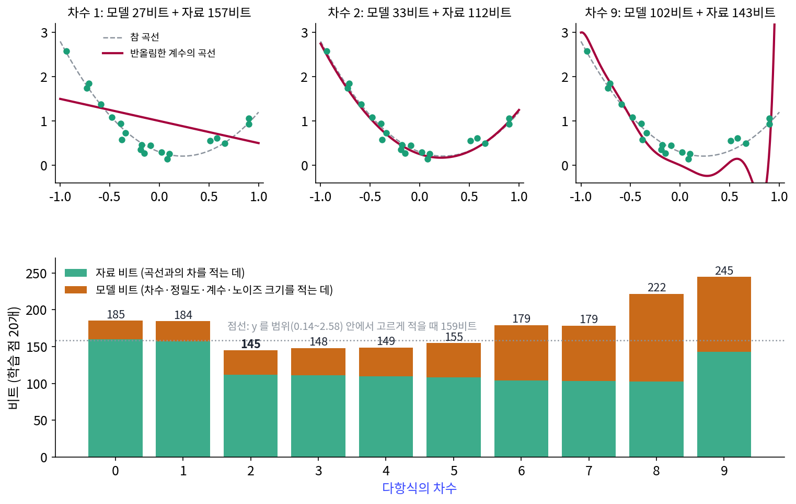
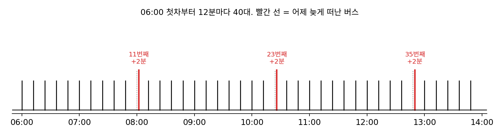
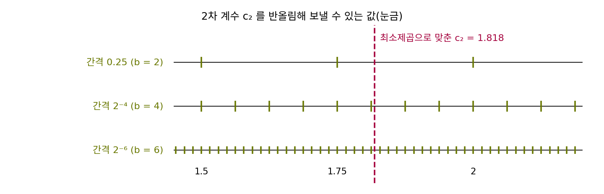
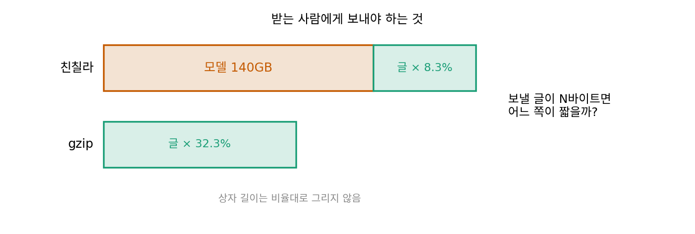

최소 기술 길이와 오컴: 모델까지 적어야 공평하다
이 장의 물음
예측을 잘하는 예측기는 산술 코딩을 거쳐 글을 짧게 적고, 이때 다음 글자에 준 확률의 −log₂를 더한 것이 코드의 길이였다. 그런데 그 셈에는 빠진 것이 있었다. 직접 쓴 빵집 이야기를 앞 5글자를 보는 예측기로 적으면, 학습에 쓴 글은 글자당 0.38비트로 아주 짧아졌지만 처음 보는 일요일 이야기는 앞 2글자 예측기보다 길어졌다. 큰 언어 모델 친칠라는 위키백과 1GB를 8.3%로 줄였지만, 받는 사람이 미리 가지고 있어야 할 모델은 140GB였다. 두 경우 모두 예측기 자신을 적는 비트를 0으로 쳤다.
곡선 맞추기를 해 본 사람은 같은 고민을 다른 말로 겪는다. 점 스무 개에 9차 다항식을 맞추면 곡선이 거의 모든 점을 지나가서 학습 오차가 아주 작아진다. 그래도 점 사이에서 곡선이 출렁이기 때문에 그 곡선을 믿는 사람은 드물다. 『최적화: 경사하강에서 Muon 까지』는 옵티마이저가 손실이 낮은 여러 골짜기(극소) 가운데 어느 것을 고르는지까지 다루고, 학습한 것이 처음 보는 자료에 통한다는 말이 무슨 뜻인지는 물음으로 남겼다. 이 장은 「처음 보는 자료에 통한다」는 말을 비트로 잰다.
- 예측기를 적는 비트까지 세면, 어떤 예측기가 가장 짧은 설명일까? 계수를 몇 자리까지 적어야 할까?
- 학습 자료를 짧게 적은 모델은 처음 보는 자료도 짧게 적을까? 언제 그렇고, 언제 그렇지 않을까?
- 모델의 꼴이나 코드를 내가 고르지 않아도 되는 「가장 짧은 설명의 길이」가 있을까? 있다면 잴 수 있을까?
- 짧은 설명을 좋아하는 마음을 다음 값을 맞히는 규칙으로 바꿀 수 있을까?
- 모델을 따로 적어 보내지 않고도 모델의 비용을 셈에 넣는 방법이 있을까?
두 부분 코드: 모델을 적는 비트까지 센다
설명은 짧을수록 좋다는 생각은 오래되었다. 흔히 14세기 영국의 수도사 오컴(William of Ockham)의 이름을 붙여 「오컴의 면도날」이라 부른다. 그런데 널리 알려진 라틴어 문장 「존재를 필요 이상으로 늘리지 말라」는 오컴의 글에서 찾지 못했고, 1639년 아일랜드의 프란치스코회 학자 펀치(John Punch)가 쓴 꼴이 퍼진 것으로 본다. 이름의 내력이 어떻든 면도날에는 눈금이 없는데, 그렇다면 9차 다항식이 2차 다항식보다 「필요 이상」인지는 무엇으로 재야 할까? 학습 오차만 보면 9차가 이기고 계수 개수만 보면 늘 0차가 이기는데, 둘을 한 단위로 바꿔 더할 수 있으면 저울에 올릴 수 있다.
역사: 모델을 적는 길이
오스트레일리아 시드니 대학 계산실에서 함께 일한 월리스(Chris Wallace)와 볼턴(David Boulton)은 1968년 『The Computer Journal』에 「분류를 위한 정보 척도(An Information Measure for Classification)」를 실었다. 자료 점들을 몇 개의 클러스터(비슷한 점끼리의 모임)로 나누는 일을, 그 분류를 먼저 적고 분류를 써서 자료를 적는 하나의 메시지로 보고, 메시지가 짧은 분류를 좋은 분류라 했다.
10년 뒤 IBM의 리사넨(Jorma Rissanen)은 『Automatica』에 「가장 짧은 자료 기술로 모델 세우기(Modeling by Shortest Data Description)」를 냈다. 산술 코딩을 실용으로 만든 바로 그 사람인 리사넨은 이 논문에서 모델의 차수를 고르는 오래된 통계 문제를 코드 길이로 다시 썼다. 모델의 파라미터를 무한히 정밀하게 적을 수는 없으니 몇 자리에서 끊어야 하고, 끊은 만큼 자료를 적는 비트는 늘어난다. 파라미터의 자리 수와 자료의 비트를 함께 줄이면 차수와 정밀도가 한꺼번에 정해진다. 모델을 적는 비트와 모델로 자료를 적는 비트의 합이 가장 짧은 모델을 고르자는 이 원칙을 오늘날 최소 기술 길이(minimum description length, MDL)라 부른다.

분류를 먼저 적고 그 분류로 자료를 적는 메시지라면, 지금은 파일로 저장해서 압축해 보고 크기를 비교하면 되겠네요.

1968년에 그런 압축기가 있었을까요? 지금 흔히 쓰는 렘펠–지브 계열의 압축은 1977년에 나왔고, 확률대로 비트를 소수점 아래까지 살려 적는 산술 코딩을 리사넨이 실용으로 만든 것도 1976년이에요.

음, 그럼 월리스와 볼턴은 메시지를 실제로 적어 보지는 못했겠네요. 확률이 p인 것을 적는 데 −log₂ p비트가 든다는 것만 가지고, 길이를 식으로 셌을 것 같아요.

그래요. 적어 볼 수 없으니 「적는다면 이만큼」을 계산으로 셌어요. 리사넨은 거기에 고민을 하나 더 얹었어요. 다항식의 계수 하나, 실수 하나를 적으려면 몇 비트가 들죠?

실수는 자리가 끝없으니까… 끝없이 들겠네요. 그럼 아예 못 적잖아요.
그래서 몇 자리에서 끊을지까지 셈에 넣은 거예요. 끊으면 계수는 짧아지고, 그 대신 곡선이 조금 어긋나서 자료를 적는 비트가 늘어요.

끊는 자리 수와 자료의 비트를 같은 비트로 더할 수 있다면, 점 몇 개를 다항식으로 보낼 때 차수와 자리 수가 정말 한꺼번에 정해지는지 직접 세어 볼 수 있을까요?
점 스무 개를 다항식으로 적기
정답을 아는 장난감에서 직접 재 보자. 참 곡선을 y = 0.3 − 0.8x + 1.7x²로 정해 두고, −1과 1 사이에서 x를 스무 번 고르게 뽑아(씨앗 고정) 표준편차 0.1의 노이즈를 섞은 y를 소수 둘째 자리까지 적었다. 이 점 스무 개를 친구에게 보낸다. x 자리는 친구도 이미 안다고 두고(재는 시각이 미리 정해진 측정처럼), 보내는 것은 y 스무 개다. 노이즈가 섞였으니 받는 사람이 y를 소수 둘째 자리까지 똑같이 되살려야 한다.
가장 단순한 방법은 y를 그대로 적는 것이다. y가 0.14에서 2.58 사이라는 것을 친구가 안다고 쳐도, 0.01 눈금의 245칸 가운데 하나를 고르게 적으면 점 하나에 7.94비트, 스무 점에 158.7비트가 든다.
곡선을 하나 정해 보내면 친구는 곡선의 값을 알고 있으니 점마다 곡선에서 벗어난 차만 받으면 되어서, 점마다 적을 것이 줄어든다. 차가 작을수록 짧게 적힌다. 차를 평균 0, 표준편차 σ̂인 정규분포로 산술 코딩하면, 차가 0에 가까운 점은 적은 비트로, 멀리 벗어난 점은 많은 비트로 적힌다. 대신 곡선을 먼저 보내야 하는데, 이 책은 곡선을 다음처럼 적어 보냈다.
- 머리: 차수와 정밀도를 알리는 데 4비트씩, 8비트.
- 계수: 다항식의 계수 c₀, c₁, …, c_d를 간격 2^(−b)의 정수배로 반올림한다. 반올림한 정수 m은 크기에 따라 길이가 늘어나는 프리픽스 코드(엘리아스 감마 코드)로 적는다. |m|이 0이면 1비트, 1이면 4비트, 3이면 6비트, 7이면 8비트처럼 크기가 두 배가 될 때마다 2비트씩 는다.
- 노이즈 크기: 반올림한 곡선과의 차로 σ̂를 구해 0.01 눈금으로 적는다.
곡선을 정하고 보내는 이 앞부분을 모델 비트라 하고, 그 곡선으로 점마다의 차를 적는 뒷부분을 자료 비트라 하자. 이렇게 모델을 먼저 적고 그 모델로 자료를 적는 코드를 두 부분 코드 (모델 비트 + 자료 비트 / two-part code)라 한다.
자료 비트의 첫 항은 차가 클수록 제곱으로 커지는 비트이고, 둘째 항은 노이즈 크기 σ̂가 클수록 점마다 늘어나는 비트다. 2차 다항식으로 해 보자. 최소제곱으로 맞춘 계수는 0.269, −0.749, 1.818이다. 간격 2^(−2) = 0.25로 반올림하면 정수 1, −3, 7이 되고, 곡선은 0.25 − 0.75x + 1.75x²이다. 정수 셋을 적는 데 4 + 6 + 8 = 18비트, σ̂ = 0.12를 적는 데 7비트, 머리 8비트를 더해 모델 비트는 33비트다. 그 곡선으로 스무 점의 차를 적으면 자료 비트는 111.8비트다. 합 144.8비트로, y를 고르게 적은 158.7비트보다 14비트 가까이 짧다.
차수를 0부터 9까지 바꾸며 모델 비트와 자료 비트의 합을 구하고, 차수마다 정밀도는 합이 가장 짧아지는 것으로 골랐다(계산은 sources/mdl/s1_twopart.py).

1차 직선은 모델 비트가 27비트로 적지만 곡선의 굽이를 따라가지 못해 자료 비트가 157.3비트나 된다. 2차에서 자료 비트가 111.8비트로 크게 떨어지고, 그 뒤로는 차수를 올려도 자료 비트가 몇 비트씩만 준다. 정밀도를 가장 높게(간격 2^(−10)) 두면 9차의 자료 비트는 100.8비트까지 내려가지만, 계수 열 개를 그만큼 정밀하게 적느라 모델 비트가 287비트가 된다. 9차 다항식이 점 사이에서 출렁이려면 계수가 47, −67처럼 커야 하고, 큰 수는 적는 데 비트가 많이 든다. 계수를 거칠게(간격 1) 반올림하면 모델 비트는 102비트로 줄지만 곡선이 망가져 자료 비트가 142.8비트로 는다. 9차는 어느 정밀도에서도 합이 244.8비트 아래로 내려가지 않으니, 모델 비트와 자료 비트를 더한 합이 면도날의 눈금 노릇을 하는 것이다.
정밀도에도 같은 저울이 걸린다. 2차 다항식의 계수를 간격 0.25에서 2^(−6)까지 촘촘히 적으면 모델 비트는 33에서 51로 18비트 느는데, 자료 비트는 111.8에서 109.7로 2.1비트밖에 줄지 않는다. 점이 스무 개뿐이라 계수를 그보다 정밀하게 알아도 점들을 더 잘 적지 못하기 때문이다. 리사넨은 점이 n개일 때 파라미터 하나를 적는 데 알맞은 비트가 대략 ½ log₂ n이라는 근사를 얻었다. n = 20이면 2.16비트다.
ML에서: 모델의 크기를 압축률에 넣으면
델레탕 외의 「언어 모델링은 압축이다」(ICLR 2024)가 보고한 친칠라 70B의 압축률 8.3%는 두 부분 코드의 자료 비트만 센 값이다. 같은 논문은 모델의 파라미터(700억 개, 하나에 2바이트)를 압축 결과에 더한 「고친 압축률」도 실었고, 그러면 enwik9 1GB의 압축률은 14,000%를 넘는다. 140GB의 모델 비트가 83MB의 자료 비트를 덮어 버리기 때문이다. 큰 모델이 정말 짧은 설명인지는 그 모델로 적을 자료가 얼마나 많으냐에 달려 있다(아래 문제 3).
신경망의 가중치 자체를 짧게 적으려는 시도도 있었다. 힌턴(Geoffrey Hinton)과 판캄프(Drew van Camp)는 1993년 계산 학습 이론 학회(COLT)에서 이런 시도를 담은 논문을 발표했다. 제목은 「가중치의 기술 길이를 줄여 신경망을 단순하게(Keeping the Neural Networks Simple by Minimizing the Description Length of the Weights)」다. 가중치에 가우시안 노이즈를 섞으면 그 가중치가 담는 정보의 양을 잴 수 있고, 학습하는 동안 노이즈의 크기를 조절해 출력의 제곱 오차와 가중치의 정보량을 맞바꾸게 했다. 위의 장난감에서 계수의 반올림 간격을 고르던 일이, 힌턴과 판캄프의 방법에서는 가중치마다 노이즈의 폭을 고르는 일이 된다.
문제 1. 버스 시간표를 문자로 보내기
동네 버스는 06:00에 첫차가 떠나 12분마다 모두 40대가 다니는데, 어제는 11번째, 23번째, 35번째 버스만 2분 늦게 떠났다. 어제 실제로 떠난 시각 40개를 친구에게 0과 1로 보내려 한다. (가) 시각마다 하루 1,440분 가운데 하나로 적으면 몇 비트인가? (나) 「첫차 시각, 간격(1~60분), 대수(1~64), 예외 수(0~40)」를 먼저 적고, 예외마다 「몇 번째 버스인지, 몇 분 늦었는지(−8~+8분)」를 적으면 몇 비트인가? (다) 늦은 버스가 30대였다면 어떻게 되는가?

(가)는 log₂ 1440이 10.49니까 40대면 419.7비트요. (나)는 규칙만 보내면 되니까 첫차 10.49, 간격 log₂ 60 = 5.91, 대수 6비트, 예외 수 log₂ 41 = 5.36이고… 27.76비트요. 열다섯 배나 짧아요.
그 27.76비트만 받은 친구는 11번째 버스가 몇 시에 떠났다고 알게 되죠?

08:00이요. 실제로는 08:02였는데… 아, 예외를 빼먹었네요. 예외 하나에 log₂ 40 = 5.32비트와 log₂ 17 = 4.09비트, 합쳐서 9.41비트씩, 셋이면 28.2비트를 더해야 해요. 56.0비트예요.
규칙이 모델 비트고 예외가 자료 비트네. 규칙이 잘 맞으면 예외가 적어서 짧아져. (다)는 예외 30개면 27.76 + 30 × 9.41 = 310.0비트야. 그래도 419.7비트보다는 짧아.
예외가 몇 개가 넘어야 시각을 그대로 보내는 것보다 길어질까요?
예외 하나에 9.41비트씩 붙으니까… 40대가 다 늦어도 404.1비트예요. 어, 다 늦어도 419.7비트보다 짧네요?
예외 하나가 시각 하나보다 싼 이유가 뭘까요?

늦은 분을 −8~+8 안에서만 적으니까요. 그런데 그건 늘 8분 안쪽으로만 어긋난다고 미리 정해 둔 덕이에요. 「8분 안쪽」도 모델에 넣은 가정이었네요.

조별 과제 회의록도 「매주 화요일 7시, 단 3주 차만 8시」라고 쓰면 짧은데, 일정이 매주 바뀌면 그냥 날짜를 다 적는 게 나아요.
문제 2. 계수를 몇 자리까지 적을까
본문의 2차 다항식은 학습 점 20개에서 간격 0.25가 가장 좋았고, 간격을 2^(−6)까지 줄이면 모델 비트만 18비트 늘었다. (가) 그 사이의 간격 2^(−4)에서는 모델 비트와 자료 비트가 간격 0.25일 때보다 얼마나 바뀌는가? (나) 같은 참 곡선에서 점을 2,000개 뽑아 모델 비트와 자료 비트의 합을 다시 구하면 가장 좋은 간격은 어떻게 되는가? (다) 두 결과를 리사넨의 근사 ½ log₂ n과 비교하라. (위젯 1에서 차수를 2로 두고 정밀도 슬라이더를 움직여 확인해 보자.)

계수를 정밀하게 적을수록 곡선이 최소제곱 곡선에 가까워지니까, 정밀할수록 좋은 거 아니에요?
위젯에서 b를 2에서 4로 옮기면서 두 막대를 같이 봐요.

b = 4에서 모델 39비트, 자료 110.2비트요. b = 2보다 모델 비트는 6비트 느는데 자료 비트는 1.6비트밖에 안 줄어요. 합이 149.2비트라 4.4비트 손해네요.
점이 스무 개뿐이면 계수가 0.25 단위로 틀려도 점들의 차가 크게 안 바뀌는 거지. 그럼 점이 2,000개면 정밀하게 적는 값을 할지도 몰라.
실제로 돌린 값이 있어요. 2,000점에서는 b = 2가 합 11,078.0비트, b = 4가 10,800.4비트, b = 6이 10,799.1비트, b = 8이 10,808.0비트예요.
가장 좋은 게 b = 6, 간격 0.0156이에요. 점이 백 배 늘었더니 간격이 16분의 1로 줄었네요.
리사넨의 근사 ½ log₂ n비트는 간격으로 치면 얼마쯤일까요?
½ log₂ n비트를 쓴다는 건 간격이 1/√n쯤이라는 거니까… 20점에서 0.224, 2,000점에서 0.022, 열 배 차이예요.
우리 건 16배였잖아. 안 맞는 거 아니야?

정밀도를 2진 자리로만 고를 수 있어서 어긋나는 거야. 방향은 같아. 파라미터 하나에 드는 비트로는 2.16비트에서 5.48비트로 늘었고.

그래요. 계수를 얼마나 정밀하게 알 수 있느냐는 자료가 정해요. 자료가 적은데 계수를 길게 적는 것은, 모르는 자리를 아는 척 적는 거예요.

실험 수업에서 유효숫자를 배울 때랑 같아요. 측정을 다섯 번 해 놓고 평균을 소수 여섯째 자리까지 적으면 안 된다고 했어요.
문제 3. 친칠라는 언제 본전을 찾나
「언어 모델링은 압축이다」에서 친칠라 70B는 enwik9를 원래 크기의 8.3%로 줄였고, gzip은 32.3%로 줄였다. 친칠라의 파라미터는 140GB다. (가) enwik9 1GB 하나만 보낼 때, 모델까지 보내는 고친 크기는 원래의 몇 %인가? (나) 같은 원천의 글을 N바이트 보낸다면, N이 얼마를 넘어야 「모델 + 압축한 글」이 gzip보다 짧은가? (다) 이 셈에서 무엇을 가정했는가?

(가)는 140GB + 0.083GB = 140.083GB니까 14,008%요. 친칠라를 보내느니 원래 파일을 보내는 게 백사십 배 나아요.
그럼 친칠라는 압축기로 쓸모가 없는 걸까요?
글이 많으면 달라지겠죠. 140 + 0.083N < 0.323N을 풀면 N > 140 ÷ 0.240 = 583GB예요. 583GB가 넘으면 친칠라가 gzip을 이겨요.
문제 1의 버스 시간표랑 같아. 규칙을 적는 데 드는 비트가 크면, 그 규칙으로 적을 자료가 많아야 본전을 찾아. 친칠라는 규칙이 140GB짜리인 거고.
(다)는요? 583GB를 넘으면 어디서나 이기나요?
8.3%라는 비율이 583GB 전체에 그대로 간다고 가정했어요. 그건 새 글이 enwik9와 같은 원천일 때만 기대할 수 있어요. 위키백과와 전혀 다른 글이면 비율이 달라질 거고요.
빠뜨린 비용은 없을까요? 친칠라는 무엇으로 배웠죠?
enwik9가 아니라 훨씬 큰 글 모음으로요. 아, 그럼 이 계산은 학습에 쓴 글을 적는 비트는 따지지 않았네요.
동아리에서 단체복을 맞출 때 판을 짜는 값이 크면, 몇 벌 이상 맞춰야 한 벌 값이 시중보다 싸지잖아요. 판 짜는 값이 친칠라의 140GB고, 맞추는 벌 수가 보낼 글의 양이네요.